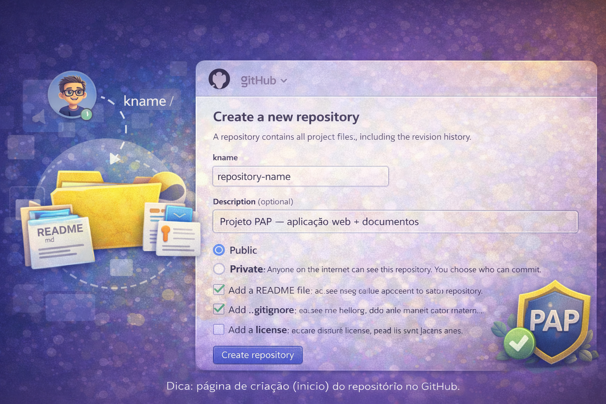

Link direto: github.com/new
Dica: confirma que estás na conta correta (canto superior direito).
Dica: confirma que estás na conta correta (canto superior direito).
📸 Print sugerido: página “Create a new repository” (início)

✅ Dica: em prints, evita mostrar emails completos/dados sensíveis (se necessário, tapa a zona).